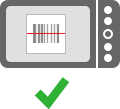
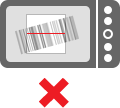

Barcode Scanner escanea continuamente una región cuadrada que aparece en su pantalla - Sólo basta introducir el código de barras es completamente dentro del rectángulo del visor:

Códigos de barras 1D, como las que se encuentran en los productos requieren un teléfono con enfoque automático. Sin él, sólo los códigos QR y códigos Data Matrix serán susceptibles de ser analizados.
Cuando un código de barras es leído, un sonido será reproducido y podrás ver los resultados del análisis, una descripción de lo que contiene el código de barras, y las distintas opciones ejecutar acciones.
Si usted está teniendo problemas de escaneo, asegúrese de sujetar el teléfono estable. Si la cámara no puede enfocar, mueva el teléfono más lejos o más cerca del código de barras.